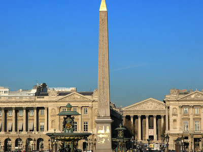
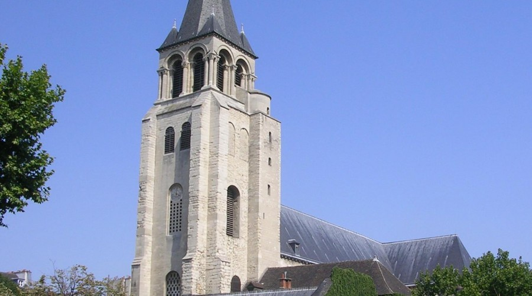

Paris Lifestyle
Monuments found in Paris
1. Conciegerie

The Conciergerie is situated on the Île de la Cité, an island on the Seine which is closely linked with the history of Paris.
Today, the Conciergerie occupies the North part of the old royal residence of Palais de la Cité which is believed to have been founded in the 6th century by Clovis, the first French king.
2. Hall of mirrors

This famous hall was built in the 17th century as a meeting and waiting place for the daily courtiers and visitor.
The hall of mirrors has a total of 17 arches which consist of 21 mirrors each . This adds up to a total of 357 mirrors in total.
3. Luxor Obelisk
No, the oldest monument in Paris is not Parisian! This is indeed the Obelisk of Luxor, which stands since 1836 in the middle of the Place de la Concorde. Built during the reign of Ramses II, it has been offered to France by the viceroy of Egype Mohammed Ali in 1830. A monument which dates from the thirteenth century before J-C, which remains – by far! – The oldest monument in Paris.
4. Église Saint-Germain Des-Prés
Ancient necropolis of the Merovingian kings, Saint-Germain-des-Prés has known numerous destructions. First by the Normans in the late 9th century, then by the revolutionaries, who have turned it into saltpeter factory in 1792. Despite this, some original features are still visible, like the bell tower, built between 990 and 1014, or the choir, built around 1135, or the flying buttresses (visible from the Boulevard Saint-Germain), built in the 12th century and considered as the oldest in Ile-de-France.
Famous Fashion Designers
Famous designers behind the biggest fashion houses
Below are a few of the famous designers behind the well known brands around the world
1. Clare Waight Keller at Givenchy
2. Olivier Rousterg at Balmain
3. John Galliano at Maison Margeila
4. Jean Paul Gaultier at John Paul Gaultier
5. Nicolas Ghesquiére at Louis Vuitton
Haute Couture designers
Paris has many famous couture designers that do an amazing job, here are a few of them
1. Chanel
2. Christian Dior
3. Maurizo Vauthier
4. Bouchra Jarrar
5. Atelier Gustavolins
Top Restuarants in Paris
Be sure to check out these restuarants to have classy mouth-watering food.
1.Beefbar Paris: This laid back historic restuarant is highly recommended for meat lovers. Do yourself a favor by making a reservation at this relaxed, glass ceiling food destination. Beefbar is located within the
views of the Eiffel Tower on the 8th arrodissment on the 5 Rue Marbuef,7 Paris
2. Astaire-brasserie fare: This slick contemporary designed restuarant is also a historic dining Mecca located in the 19 Passage des Panoramas, 75002 Paris. A chilled spot with scrumptious and adventurous cuisine
served under the sounds of uplifting jazz music.
3.Girafe: There is nothing mind blowing like dining under the perfect views of the Tour Eiffel as they call it. This outdoor patio provides food for everyone including vegeterians.The Girafe's address is the Palais
de Challiot, 1 Place du Trocadero,75016 Paris.
4.Lasserre: An emblematic temple of Parisian gastronomy next to the Grand Palais musuem on the 27 avenue Franklin Delano Roosevelt,75008 Paris. Here you find the amazing french and european
cuisine with both vegan and gluten-free options.
Hotels to settle in
In a budget?? we have something for you too
Between 23.12 euros and 69.36 euros
1. Hôtel Aulivia Opera: offers you a classic double room at an affordable price of 67.05 euros per night
2. Maxim Falice: get an double bed in a cosy double room for 69.06 euros per night
3. Vintimille hotel: caters for people with a tight budget by offering an Economy Single Room at 50.87 euros per night
Between 77.07 euros and 154.14 euros
1. Elysées union: this single room with a single bed goes for 92.10 euros per night
2. Palym: a no deposit location with a single room for just 84.24 euros per night
3. Hôtel De Castiglione: a superior twin room with two single beds for 135.11 euros per night
Between 161.85 euros and 231.22 euros
1. Hyatt Regency Paris Etoile: a king room room with a large double bed valued at 175.18 euros per night
2. Montfleuri: has two deluxe double connectiong rooms with 2 double bed and a single bed all valued at 220.19 euros
3. Maison Albar Hotels le Diamond: a superior twin room with two single beds goes for 200.16 euros
Customs and traditions of the Parisians
French customs can be very difficult to navigate and understand especially for foreigners and tourist. Here are a few customs practiced by the Parisians that the tourists consider 'unsual' for have become a norm or tradition to the residents of Paris
1. Never bring wine to a dinner party
Your host has carefully chosen the wine for the evening. By bringing your own wine, you may inadvertently imply that you don’t trust the host’s taste in wine, or that you would prefer your own.
2. Try and arrive 10 to 20 minutes late
While it may seem rude to come late to events, to the Parisians and the french at large coming late is an unspoken rule. Guests will always arrive a little late – lest they surprise their host in the middle of the preparations. Of course, this only applies to dinner parties though. Please be punctual for restaurant reservations.
3. Kiss, kiss
Most residents practice the double kiss greeting, i.e. a glancing kiss on each cheek. And, there are regions, particularly in northern France, where people favour four kisses – even five. This can catch visitors off-guard, as can potential awkwardness around which cheek to present first!
4. Having tea from a cereal bowl
This is one of the customs that continue to baffle and confound visitors. Of course, none more so than the habit of drinking tea out of a bowl. The French enjoy drinking their morning beverage (tea or coffee) out of a small, cereal-sized bowl.
5. Talking about politics and religion
What do the French talk about over their long lunches and relaxed dinner parties? In contrast to the rest of the world, no topic is taboo. While foreigners may shy away from discussing politics, money or religion, the French love frank, intellectual debates – and nothing is off the agenda.